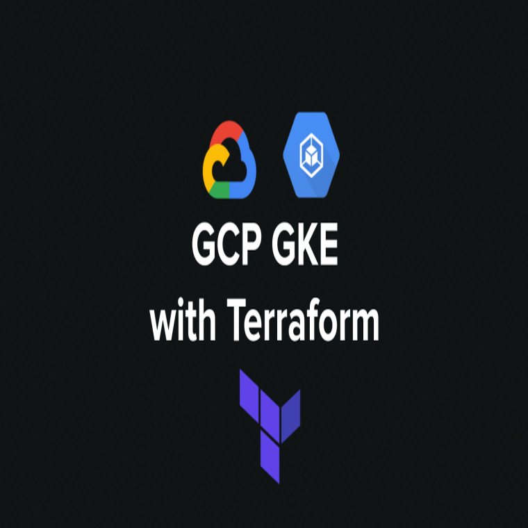
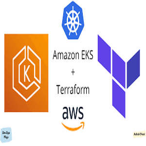
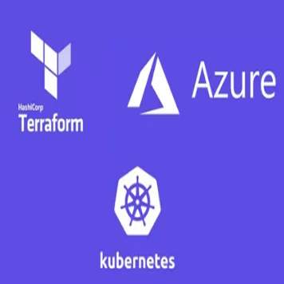

RONALD MUGUME
>> ENTERPRISE CLOUD ARCHITECT & INFRASTRUCTURE ENGINEER
ronald@cloud-engine:~$ cat certs.log
I don't just deploy infrastructure; I engineer the digital backbone of modern enterprises. In the cloud, downtime is lost revenue. Operating deep within GCP, AWS, and Azure, I specialize in architecting highly available, fault-tolerant environments that scale dynamically and protect the bottom line.
I replace fragile manual processes with ironclad, immutable infrastructure using Terraform and Kubernetes. Whether it's executing zero-downtime deployments, enforcing strict zero-trust security, or drastically reducing compute costs, I deliver cloud solutions that businesses can bet their entire operations on.
[ ENTERPRISE CLOUD ARCHITECTURE ]
ENV: GCP | AWS | AZURE
- > Architected multi-region, highly-available environments across the big three public clouds.
- > Executed aggressive cost-optimization strategies and disaster recovery plans, ensuring infrastructure scales seamlessly with traffic spikes while maximizing ROI.
[ KUBERNETES & CONTAINER PLATFORMS ]
ENV: GKE | EKS | AKS | DOCKER
- > Commanded large-scale production deployments on managed Kubernetes services.
- > Implemented zero-downtime rollout strategies, hardened cluster security via strict RBAC, and optimized pod allocation to squeeze maximum performance out of every node.
[ INFRASTRUCTURE AS CODE & SRE ]
ENV: TERRAFORM | PYTHON | CI/CD | PROMETHEUS
- > Transformed legacy workflows into immutable infrastructure. Forged advanced CI/CD pipelines in GitHub Actions that ship code flawlessly.
- > Dialed in comprehensive observability using Prometheus and Stackdriver to catch and resolve anomalies before they impact end-users.

Engineered a production-ready Google Kubernetes Engine (GKE) environment using a custom Terraform module. Delivered a highly-secure architecture with private node pools and strict IAM boundaries, reducing deployment time by over 90%.
[ VIEW_SOURCE ]
Designed and automated an enterprise-grade Amazon EKS architecture. Integrated AWS Load Balancer Controllers within a hardened VPC network, providing a highly-available foundation for microservice workloads.
[ VIEW_SOURCE ]
Developed an idempotent Infrastructure as Code pipeline for deploying resilient Azure Kubernetes Service (AKS) clusters. The solution guarantees repeatable environments with meticulously configured virtual networks.
[ VIEW_SOURCE ]